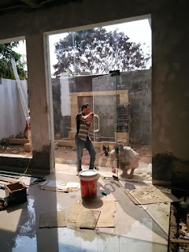
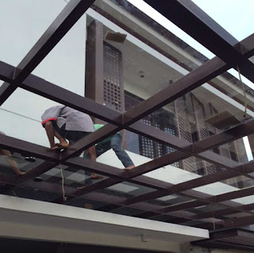
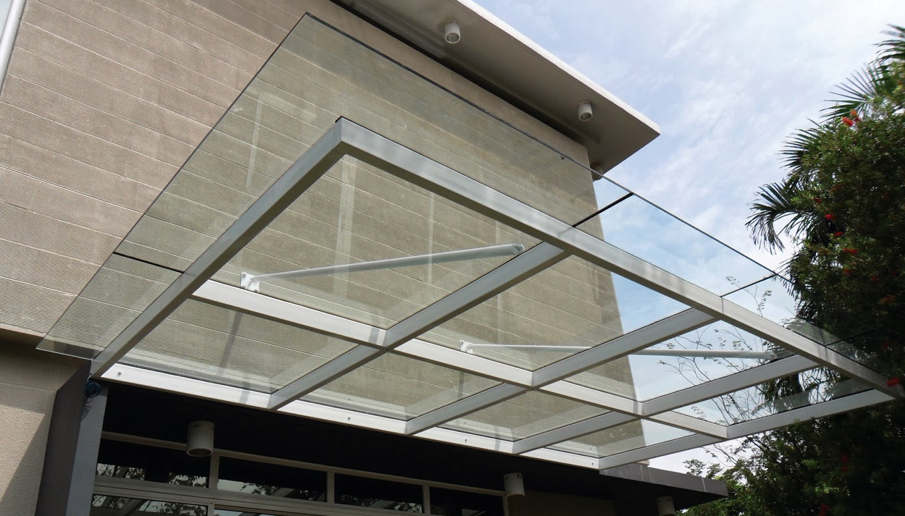
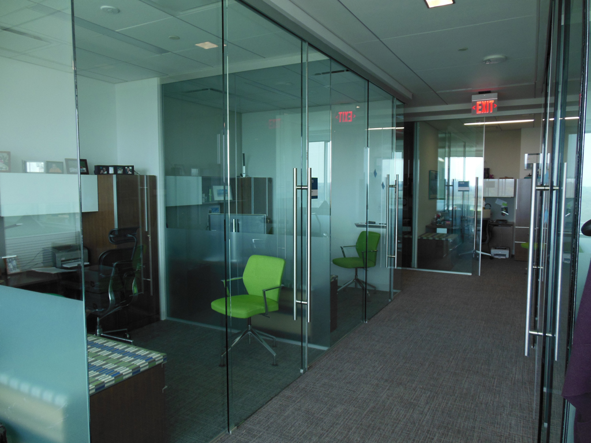

Semakin berkembangnya dunia pembangunan, karenanya hadir banyak material penambah yang melengkapi estetika sebuah banguanan. Kita tak jarang menemui material-material hal yang demikian pada gedung, kantor, industry malah rumah hunian. Banyak ragam dari kaca yang bisa di pakai untuk banguan ataupun rumah tinggal.
Jenis-macam kaca diantara lain kaca tempered, kaca shower, railing kaca, kanopi kaca dan masih banyak lagi. Tiap-tiap kaca mempunyai fungsi masing-masing yang membuat banyak orang kian mebutuhkannya dari hari ke hari. Berikut ini sedikit penjelasan mengenai bermacam-macam jenis kaca dan fungsi kaca dan juga parket lantai kayu jati yang dapat anda dapatkan.
Jual Kaca Cermin di Kupang
Kaca cermin sekarang mempunyai desain yang berbeda. Kaca cermin juga dihasilkan untuk yang lain seperti pintu. Anda dapat memiliki pintu dengan bahan berupa kaca cermin Kupang. Cermin dengan pelbagai ukuran juga tersedia. Malah, ada juga desain kaca cermin Kupang yang unik. Kini perlu dilihat juga adalah apakah Anda mau mempunyai kaca cermin Kupang desain minimalis atau yang elegan. Cermin minimalis memiliki siku.
Anda juga dapat tentukan apakah berkeinginan memiliki cermin yang memiliki frame atau tak. Dan bahan yang digunakan untuk membikin bingkai pun berbeda-beda. Pun, ada juga furniture berupa pintu yang terbuat dari kaca cermin Kupang. Atau barangkali Anda menginginkan kaca cermin Kupang yang lantas dapat direkatkan pada bagian furniture tertentu seperti pintu lemari. Tidak figur lemari baju di mana bagian pintunya terbuat dari kaca cermin Kupang. Cermin ini umumnya ditempatkan di kamar mandi, di atas wastafel, atau di kamar tidur. Atau kaca cermin Kupang ini juga dapat dibuat sebagai bahan pintu lemari. Harga yang terjangkau dan kualitas terbaik yakni ciri khas dari dis.or.id.
Info Pemesanan Selengkapnya
Google Maps: https://www.google.com/maps/d/u/0/viewer?mid=1HNPQwTg5M-VmcXHvNbVncTuxY7ALbdIQ&ll=-7.27380280025364%2C112.65243155000007&z=18
Note: https://www.facebook.com/notes/distributor-of-industrial-supply/pabrik-supplier-kaca-cermin/1785720801727799/
Event: https://www.facebook.com/events/135275393812568/
Distributor & Supplier Pintu Kaca

Pintu kaca amat berguna bagi anda yang ingin menabah kesan gedung lebih menawan dan mewah. Anda dapat pilih desain seperti apa yang Anda sukai. Dengan pelbagai varian frame seperti bingkai kayu atau alumunium dan tanpa pigura atau frameless yang yaitu desain pintu kaca tanpa pigura. Anda bisa pilih bahan untuk frame yang Anda inginkan, apakah itu diciptakan dari aluminum atau dari kayu. Dalam hal ini, terdapat sebagian variasi kaca dengan kwalitas yang terbaik.
Dis.or.id menyediakan pintu kaca dengan pelbagai variasi yang dapat anda pilih layak kebutuhan.
Dis.or.id siap untuk membikin pintu kaca cocok dengan apa yang Anda inginkan. Dis.or.id mempunyai daya yang telah sangat profesional di bidang ini.
Jasa Pemasangan Railing Kaca
Kini railing kaca kini semakin populer. Anda tak hanya ditawarkan dengan contoh atau desain railing kaca yang sama. Lupakan bahan seperti kayu. Pastikan komponen hal yang demikian terbuat dari bahan aluminum yang kuat. Dalam hal kaca, Anda dapat memilih kaca tempered. Karenanya dari itu, para produsen berupaya untuk mewujudkan railing yang terbuat dari kaca dengan figur yang berbeda-beda. Apabila itu, dari segi keamanan, kaca tempered ini juga tepat jikalau menjadi alternatif Anda. Pun juga bahan yang digunakan.
Tidak ini tak hanya ditentukan oleh ketebalan atau harga namun juga oleh macam. Railing ini dapat dijadikan sebagai pembatas pada tangga dan juga sebagai pembatas pada balkon. Seandainya mendorong keamanan, railing kaca ini juga akan mempercantik desain interior rumah Anda. Dengan demikian, pecahan tak akan melukai siapa saja. Apabila juga dengan railing. Kecuali disana terdapat banyak tersedia beraneka ukuran railing kaca dengan desain yang anda inginkan. Sekiranya memberikan kesan minimalis pada interior rumah, ini juga membuat rumah Anda menonjol lebih nyaman untuk diciptakan tempat tinggal.
Distributor, Supplier & Jasa Pasang Kanopi Kaca

Banyak ragam kaca kanopi yang dipakai sebagai atap, tidak cuma satu tipe saja. Sifat utama material bahan atap akrilik juga bisa disebut atap acrylic, ini merupakan warnanya yang bening tembus pandang. Harga atap kaca per meter persegi juga amat diberi pengaruh oleh struktur penyokong yang di pakai. Di samping pintu kaca shower akan membuat kamar mandi kecil terlihat lebih besar. Atap akrilik atau dapat juga disebut atap kaca acrylic ini banyak ditemukan di sebuah bangunan rumah, seperti ruko, apartemen, resto, mall, sampai bangunan gedung.
Kini anda dapat menerima kanopi kaca dengan mutu terbaik dan juga bermutu di dis.or.id. Ini tampak dari bahan material yang di pakai dalam pembuatan kanopi kaca. Jika itu, kanopi juga bisa melindungi kendaraan beroda empat dan kendaraan lain anda. Banyak bangunan seperti gedung perkantoran, perumahan, ruko dan apartement yang memakai kanopi kaca tempered. Setelah kaca untuk atap kanopi cukup digemari. Tidak anda sedang mencari kanopi kaca, anda dapat langsung mengunjungi dis.or.id.
Distributor & Supplier Kaca Shower
Anda pastinya meninginkan desain kamar mandi rumah layaknya kamar mandi hotel berbintang yang menggunakan toilet duduk serta dilengkapi shower ataupun bath tub. Penyekat ini akan memisahkan antara daerah berair yang diaplikasikan untuk mandi atau meletakan shower dan tempat lain yang ialah zona kering. Dan sensasi mandi menjadi lebih asik untuk dirasakan. Kelebihan shower screen dibanding dengan sistem penyekatan yang lain yaitu diwujudkan dalam wujud yang telah jadi dan tinggal dipasang saja. Kita tidak perlu repot lagi mencari tukang sendiri karena pemasangan alat sekat ini memang memerlukan teknik tersendiri.
Tak anda sedang memerlukan kaca shower untuk kamar mandi anda, anda dapat langsung mengunjungi dis.or.id. Disana anda dapat menerima kac shower yang sesuai dengan kemauan anda. Tidak terbaik dan harga relatif murah. Anda bisa buktikan sendiri.
Distributor, Supplier & Jasa Pasang Kanopi Kaca
Seiring dengan perkembangan zaman di dunia properti, sekarang kanopi kaca sudah berkembang cepat mengikuti arsitektur modern. Seiring dengan perkembangan zaman di dunia properti, sekarang kanopi kaca terlah berkembang kencang mencontoh arsitektur modern . Atap kaca skylight ditujukkan untuk mendapatkan cahaya natural UV yang memiliki fungsi sebagai penerangan dalam sebuah ruang. Kalau tembus pandang, kaca mengabsorpsi cahaya yang masuk sehingga kian tebal kaca maka semakin sedikit cahaya yang dapat melewatinya, karenanya sifat transparannya makin berkurang.|Di samping pintu kaca shower akan membuat kamar mandi kecil kelihatan lebih besar. Atap akrilik atau bisa juga disebut atap kaca acrylic ini banyak ditemukan di sebuah bangunan rumah, seperti ruko, apartemen, cafe, mall, sampai bangunan gedung.
Seiring dengan perkembangan dunia properti, kini kanopi kaca tempered telah berkembang pesat mengikuti arsitektur modern. Harga untuk tiap pemasangan malahan beraneka cocok dengan kebutuhan anda. Sesudah kaca untuk atap kanopi cukup digemari. Tidak anda sedang mencari kanopi kaca, anda bisa segera mengunjungi dis.or.id. Disana anda akan memperoleh kanopi kaca yang cocok dengan beraneka ketebalan dan harga yang cukup relatif murah.
Jasa Maintenance Kaca
Jasa maintenance kaca telah menjadi pilihan tepat bila Anda ingin melakukan perawatan gedung yang terbuat dari kaca. Dengan kian berjalan nya waktu tentu gedung yang memiliki bahan kaca pada sisinya memerlukan perawatn khusus supaya tetap awet dan tahan lama. Jasa maimtenence kaca menyediakan layanan pembersihan kaca gedung serta koreksi kaca gedung yang rusak, pecah dan tidak cocok lagi untuk di pakai. Salah satunya pelayanan berupa pembersihan gedung yang terbuat dari kaca. Kaca menjadi kusam. Perlengkapan ragam kotoran seperti debu serta cahaya matahari dan juga hujan kerap kali membuat kaca gedung menjadi kusan dan tak menarik. Kekuatan yang di gunakan untuk jasa maintenance kaca diantaranya godole, rope access, crane, dan scaffolding.
Kini juga hadir maintenance kaca untuk membersihkan kaca berbentuk melengkung. Lebih dari itu, Kalau spesialis yang dimilik oleh dis.or.id juga bisa membetuli kaca yang rusak. Dis.or.id menyiapkan seluruh tipe kaca layak keperluan dikala ini.
Dis.or.id mempunyai semua energi pakar yang di rekrut cuma mereka yang profesional yang tahu persis bagaimana metode menerapkan alat dan bagaimana membersihkan kaca gedung bertingkat. Selain cuma dalam hal membersihkan kaca, mereka juga cakap mengerjakan pembetulan serta penggantian kaca yang mengalami kerusakan.
Jasa Pemasangan Kaca Tempered

Disana anda bisa memanfaatkan jasa maintenance kaca dengan daya ahli yang kapabel membersihkan gedung kaca dengan produk pembersih kaca apa yang terbaik untuk menghilangkan kotoran dan kusam. Untuk komponen perkantoran, pintu, partisi, serta balkon biasanya terbuat dari kaca tempered. Banyak komponen properti yang dapat dihasilkan dengan bahan berupa kaca tempered. Tetapi dulu cuma gedung perkantoran atau sentra perbelanjaan modern saja yang mengaplikasikan tipe kaca ini, kini rumah hunian juga sudah dibangun dengan kaca tempered. Kecuali ini tidak lain karena kian banyak orang yang memahami kwalitas serta keunggulan dari kaca tempered ini.
Jika itu, bermacam-macam bagian properti akan kian menarik jika dijadikan dari kaca tempered seperti kanopi, pintu, kamar mandi, dan balkon.
Banyak hal yang dapat dilakukakn kaca tempered ini salah satunya sebagai pembatas, untuk kamar mandi dan masih banyak lagi. Selain kekuatan pakar yang dimiliki oleh dis yakni yang professional dan berpengalaman. Bukan sembarang alat yang diterapkan untuk memotong kaca tempered cocok dengan kebutuhan. Jika aman kaca tempered juga kapabel memberikan kesan estetika yang benar-benar baik dibandingi dengan kata variasi lainnya.
Distributor & Supplier Pintu Lipat Kaca

Bukan cuma bagian depan saja yang dipasang pintu kaca lipat namun komponen dalam juga dapat. Secara biasa, kaca dibagi menjadi 6 jenis, yaitu kaca bening, kacang berwarna atau tinted glass, kaca es, kaca cermin atau one way glass, kaca laminasi, dan yang terakhir kaca tempered. Kini pasti, modelnya banyak cocok dengan yang Anda butuhkan.
Tak cuma itu, pintu lipat kaca bisa Anda pasang di kamar lantai atas yang ada balkon. Banyak pertimbangan yang membikin Anda pasti yakin untuk memilih kaca tempered daripada macam kaca yang lainnya. Hinges adalah aksesoris yang penting sebab hinges inilah yang menyangga berat pintu kaca Anda.
Jasa Pemasangan Kubikel Toilet
Dikala ini banyak desain WC yang didominasi oleh kubikel/cubicle yang mempunyai tampilan lebih modern dan mewah. Kubikel WC adalah kaca pembatas yang diterapkan pada kamar kecil.
Rumah sakit dan perkantoran. Banyak profit yang dapat di peroleh dengan memakai kubikel toilet diantaranya adala efisiensi, dimana dalam satu ruangan dapat menampung dan membuat banyak kamar mandi. Dengan menggunakan kamar mandi kubikel pada hunian ataupun gedung yang anda miliki tentunya banyak kelebihan yang anda daptkan yaitu harga kubikel yang lebih murah dibandingi dengan bahan konvensionel lainnya. Bila anda tertarik untuk memiliki kubikel kamar kecil, anda dapat lantas mengunjungi dis.or.id.
Apabila anda mau memiliki kubikel kamar kecil ini, anda dapat mengunjungi website dis.or.id.
Distributor & Supplier Partisi Kaca

Partisi kaca telah lagi dianggap sebagai hal yang aneh lagi. Anda bisa bandingkan sendiri berapa tarif yang Anda seharusnya siapkan untuk membikin partisi tembok. Anda sepatutnya beli batu bata, pasir, dan semen. Komponen tertentu seperti kamar mandi dalam atau taman dalam ruang yang biasanya terdapat di bagian tengah atau belakang rumah biasanya memakai pembatas berupa partisi kaca. Jadi, Anda akan betul-betul berhemat apabila memilih untuk memasang partisi kaca ini. Akan namun, Anda harus selektif dalam hal memilih kaca untuk partisi. Anda patut tahu ada kaca transparan, semi transparan dan kaca yang sama sekali tidak transparan yang kerap disebut dengan kaca tempered Kupang. Selain itu, partisi kaca ada yang frameless (tanpa ) dan juga ada yang pigura. anda sedang mencari distributor dan supplier partisi kaca yang memiliki kaca dengan kwalitas terbaik, anda tinggal mengunjungi dis.or.id. Disana anda akan menerima partisi kaca yang sesuai dengan keinginan anda.